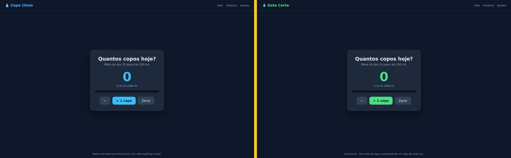
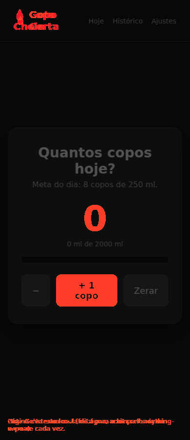

Craft Anything estudia el original, le pide a un agente de IA que construya tu versiê³n y comprueba si se parece. Aquê aprenderê¡s a usarlo, verê¡s la prueba que hicimos y te llevarê¡s una guêÂa para comprobar el resultado con cualquier agente.
Craft Anything es un programa abierto y gratuito que observa un sitio web, una app o un juego, le pide a un agente de IA (como Claude Code) que escriba su propia versiê³n desde cero y compara el resultado con el original. Esta guêÂa enseê±a a instalarlo y usarlo con seguridad, lo compara con REA, otra herramienta abierta que muestra cê³mo funciona un programa por dentro, y presenta una prueba real que hicimos aquêÂ. El kit incluye una guêÂa para medir la similitud y una lista de funciones para comprobar la copia con cualquier agente. Necesitas una computadora y un agente de cê³digo con sesiê³n iniciada; el kit requiere Node.js y Python 3.
El video que dio origen a este kit (en portuguê©s): cê³mo Craft Anything estudia, construye y compara, el seguro del modo automê¡tico, una prueba real con una pizarra y la comparaciê³n con REA.
La idea es antigua: en 2009, Markus Persson vio el juego Infiniminer e hizo su propia versiê³n en aproximadamente una semana, sin el cê³digo del original. Se convirtiê³ en Minecraft, y Microsoft comprê³ Mojang por US$ 2,5 mil millones en 2014. Hoy un agente de IA hace el trabajo pesado; Craft Anything organiza ese trabajo.
Toma capturas de pantalla, mide colores, fuentes y espacios, y lee el texto visible en tres tamaê±os de pantalla: computadora portê¡til, tableta y celular.
Ejecuta tu agente de cê³digo (Claude Code es el primero compatible) y le pide una versiê³n nueva, escrita desde cero, con tu nombre y tus colores.
Compara tu versiê³n con el original, enumera lo que todavêÂa no coincide y se lo devuelve al agente, ronda tras ronda, hasta que se parezca.
Fuente: github.com/storytold/craft-anything ê¢â¬â cê³digo abierto (MIT o Apache-2.0), creado por el equipo de ArtCraft, versiê³n 0.6.0 del 09/11/2026, todavêÂa en ê«early alphaê».
Indicas el original, dices lo que quieres y presionas Start. Cuando tiene que tomar una decisiê³n, te pregunta con palabras simples.
Abre el original en un navegador privado y registra lo que ve un visitante, a 1440, 768 y 390 px.
El agente escribe un proyecto nuevo en el lenguaje que le pidas (o en el que considere mejor).
Compara las pantallas una al lado de la otra y enumera las diferencias. Se detiene cuando llega a ê«Good enoughê» (90% por defecto).
Abres el resultado o pides cambios en el cuadro de abajo, y vuelve a mejorarlo.
Solo usa lo que ve un visitante: capturas, texto visible, medidas, colores, fuentes y menêºs abiertos. No lee cê³digo, archivos ni el cê³digo fuente de la pê¡gina. Rechaza las herramientas que permiten mirar por dentro. êÅ¡sala siempre que el original no sea tuyo.
Usa todas las herramientas: lee el cê³digo y los archivos del programa (con Ghidra, si estê¡ instalado) y el JavaScript del sitio. êÅ¡salo solo con lo que te pertenece o que tienes permiso para examinar.
Es una regla sobre lo que Craft Anything ofrece y rechaza. El agente que ejecutas sigue actuando como têº, con tus permisos. En nuestra prueba, el agente constructor de Claude Code incluso leyê³ la configuraciê³n personal de la computadora. Para aislarlo de verdad, ejecêºtalo en una computadora o carpeta separada, sin contraseê±as ni claves (consulta caixa-do-agente).
Una IA que escribe y ejecuta programas en tu computadora, como Claude Code. Harness es el programa que le da herramientas al modelo de IA para actuar (leer, escribir y ejecutar comandos).
CLI = usar la terminal escribiendo comandos. MCP y ACP son ê«conectoresê» estê¡ndar para conectar un agente de IA con herramientas (MCP) o con otro programa que lo controla (ACP).
Descubrir cê³mo funciona un programa observando lo que hace o el archivo ya creado, sin el cê³digo fuente. Ghidra, Hopper, IDA y Kuna son programas que ê«traducenê» un archivo ejecutable a algo legible.
Un espacio aislado donde se ejecuta un programa sin que pueda modificar el resto de la computadora. Chromium usa uno; ninguna de las dos herramientas de aquê lo usa.
Un ê«cê³digo de verificaciê³nê» del archivo. Si el cê³digo de tu descarga coincide con el publicado, el archivo llegê³ completo y no fue reemplazado.
Versiê³n muy inicial: funciona, pero cambia rê¡pido y todavêÂa tiene defectos. AppImage, .deb, .rpm, snap y Flatpak son formatos para instalar programas en Linux.
Para Craft Anything y para el kit de comprobaciê³n de este repositorio.
Windows, macOS, Linux (Intel/AMD o ARM) o FreeBSD. Con Chrome, Edge, Brave o Chromium instalado: necesita abrir un navegador para estudiar sitios web.
Claude Code (el primero compatible), o Copilot CLI y Grok mediante el protocolo ACP. Usa tu inicio de sesiê³n; Craft Anything nunca ve tu cuenta.
Node.js 18 o posterior con Playwright (para medir la similitud) y Python 3 (para la lista de funciones). No necesitas Craft Anything.
Seis pasos. El cuarto es el mê¡s importante: desactivar el modo automê¡tico para que pida permiso antes de ejecutar comandos.
En la pê¡gina de versiones del repositorio, descarga el archivo de tu sistema: .msi (Windows), .dmg (macOS) o, en Linux, el paquete comprimido .tar.gz (el que probamos), el .AppImage (un solo archivo que se ejecuta directamente), el .deb (Ubuntu/Debian) o el .rpm (Fedora). Compara el ê«cê³digo de verificaciê³nê» SHA256 con el archivo SHA256SUMS.txt de la misma pê¡gina: si coincide, el archivo llegê³ completo y es el publicado. Asê lo hicimos en nuestra prueba:
# Linux ARM64; en Intel/AMD cambia aarch64 por x86_64 gh release download v0.6.0 -R storytold/craft-anything -p 'craft-anything-0.6.0-linux-aarch64.tar.gz' -p 'SHA256SUMS.txt' grep linux-aarch64.tar.gz SHA256SUMS.txt; sha256sum craft-anything-0.6.0-linux-aarch64.tar.gz # los dos cê³digos deben coincidir; despuê©s: tar -xzf craft-anything-0.6.0-linux-aarch64.tar.gz ./craft-anything-0.6.0-linux-aarch64/bin/craft-anything # la app de ventana ./craft-anything-0.6.0-linux-aarch64/bin/craft-anything-cli doctor # la lêÂnea de comandos
ê¿No tienes gh? Descê¡rgalo con el navegador desde github.com/storytold/craft-anything/releases. ê¿Quieres ir mê¡s allê¡ de SHA256? La pê¡gina tambiê©n tiene SHA256SUMS.txt.asc y la clave release-signing-key.asc para comprobar la firma con gpg (en nuestra prueba: ê«Good signatureê»). Su README avisa que Flatpak no puede abrir el navegador, algo necesario para estudiar sitios web: prefiere otro formato.
Si todavêÂa no lo tienes, instê¡lalo e inicia sesiê³n con tu cuenta (suscripciê³n). Craft Anything ejecuta tu claude tal como estê¡ configurado.
# macOS y Linux curl -fsSL https://claude.ai/install.sh | bash claude # la primera vez, sigue las instrucciones para iniciar sesiê³n en el navegador claude auth status # comprueba si iniciaste sesiê³n # Windows (PowerShell): irm https://claude.ai/install.ps1 | iex
En la app: Settings ê¢â â AI ê¢â â Harnesses ê¢â â Detect. Encuentra Claude Code instalado. En la lêÂnea de comandos, craft-anything-cli doctor muestra lo que falta.
Settings ê¢â â Safety ê¢â â Auto mode ê¢â â desactivado. Viene activado de fê¡brica: el agente constructor ejecuta comandos (como npm install) sin preguntar. Al desactivarlo, segêºn su documentaciê³n, aparece una tarjeta ê«Allow once / Always for this project / Don't allowê» antes de cada nuevo tipo de acciê³n (en nuestra prueba estaba activado y no preguntê³ nada). Instalar paquetes ejecuta cê³digo en tu computadora; elige ê«siempreê» solo para lo que confêÂas.
Settings ê¢â â General. La ubicaciê³n predeterminada es Documentos/Craft Anything. Cada proyecto tiene una carpeta con craft.json (la solicitud y el historial), capture/ (lo que vio del original), app/ (tu versiê³n) y checks/ (cada comparaciê³n).
En la pantalla Make: elige Website, App o Game, pega la direcciê³n, deja Clean room, escribe lo que quieres y presiona Start. O usa la lêÂnea de comandos (craft-anything-cli, incluido en el archivo .tar.gz; su README dice que el AppImage tambiê©n lo incluye, con --cli):
craft-anything-cli rebuild https://example.com "Recreate this website" --clean-room craft-anything-cli rebuild https://example.com "Make the header blue" --continue-in "<carpeta del proyecto>"
Una buena prueba para cualquier herramienta de este tipo es una pizarra de dibujo abierta, como Excalidraw: tiene un aspecto sencillo y muchas funciones fê¡ciles de comprobar. En Settings, sube ê«Good enoughê» a 95% y pide:
Make my own version of this whiteboard app and call it <NOME>. Keep the same drawing tools and
layout, but use my own name and colors.
Tambiê©n puedes pedirlo en espaê±ol: ê«Crea mi propia versiê³n de esta app de pizarra y llê¡mala <NOME>. Mantê©n las mismas herramientas de dibujo y el mismo diseê±o, pero usa mi nombre y mis coloresê». Usa una instancia que puedas probar; nunca un sitio que requiera iniciar sesiê³n.
El kit genera esta lista con instrucciones para probar cada funciê³n y la rechaza mientras falten pruebas: python3 conferir/funcoes.py gerar quadro-branco --nome "<NOME>" --saida checklist.md.
Cuando todo funcione, pide en el cuadro de cambios: un logo nuevo, el color morado y el nombre en todas partes. Primero que funcione, despuê©s la apariencia: mezclar ambas cosas confunde al agente. La solicitud lista estê¡ en pedidos/3-mudanca-de-marca.md. Lo que importa es la experiencia de uso, no la captura de pantalla.
Datos comprobados el 10/11/2026 en el README de cada repositorio y en la API de GitHub. Detalles y fuentes en COMPARACAO.md (en portuguê©s).
| Craft Anything | REA (Reverse Engineer Anything) | |
|---|---|---|
| Quê© hace | Estudia, pide que construyan y comprueba, todo en una app | Le da herramientas a tu agente para estudiar programas; el agente explica con pruebas y puede escribir tu versiê³n |
| Quiê©n construye | Un agente que ejecuta (primero Claude Code) | El agente que ya usas (Claude Code, Codex, Cursor, Gemini CLIê¢â¬Â¦) |
| Cê³mo comprueba | Por sê solo: pantallas en 3 tamaê±os, hasta llegar a ê«Good enoughê» | No incluye una comprobaciê³n visual lista; el agente prueba lo que hizo |
| Sala limpia | Viene activada de fê¡brica | No tiene un modo con ese nombre |
| Mirar por dentro | Modo Deep (motores propios + Ghidra) | Es su punto fuerte: Hopper, Ghidra, IDA o Kuna; .NET, Android, Electron, firmwareê¢â¬Â¦ |
| Formato | App de ventana + CLI + MCP | MCP + CLI (Node.js) |
| Licencia | MIT o Apache-2.0 | MIT |
| Creado | 31/10/2026 ê· ~26 mil estrellas | 14/04/2026 ê· ~450 mil estrellas |
| Madurez | 0.6.0, ê«early alphaê» | rea-agents 6.8.0 |
| ê¿Es un entorno aislado? | No (su propio README lo advierte) | No: se ejecuta con tus permisos |
REA naciê³ seis meses y medio antes, es de otro propietario, estê¡ escrito en otro lenguaje y ninguno de los dos README menciona al otro. Ademê¡s, REA no ê«solo muestra cê³mo funcionaê»: su README dice que el agente puede construir una versiê³n para tu proyecto. La diferencia real estê¡ en el conjunto de herramientas: Craft Anything lo reêºne todo en una app con la sala limpia activada; REA es una caja de herramientas mê¡s completa para estudiar, y la construcciê³n queda a cargo de tu agente.
quieras rehacer un sitio, una app sencilla o un juego a tu manera, sin leer el cê³digo de nadie, y quieras una comprobaciê³n lista.
quieras entender cê³mo funciona por dentro una funciê³n de uno de tus programas: un algoritmo, un formato de archivo o una app instalada.
ya tengas un agente y quieras comprobar cualquier copia: similitud en 3 tamaê±os y pruebas de cada funciê³n.
Computadora Linux ARM64, Claude Code con suscripciê³n, ninguna clave de API. Original: una pê¡gina local para contar vasos de agua (ê«Copo Cheioê»). Solicitud: la misma pê¡gina con el nombre ê«Gota Certaê» y color verde, en sala limpia.
Las dos calificaciones no se contradicen: la de Craft Anything combina diseê±o, detalles y texto; nuestra mediciê³n solo observa dê³nde estê¡ cada elemento, y los cambios de nombre y pie de pê¡gina pesan mê¡s. Por eso usamos la meta 85.


doctor: todo bien; encontrê³ Claude Code, Codex y Chromium.commands: 322 comandos (el README indica 320).npm install sin preguntar.Resultados, comandos y detalles: TESTE-AQUI.md (en portuguê©s).
Dos herramientas que no dependen de Craft Anything ni de REA: una mide si el resultado se parece, la otra exige pruebas de que funciona. Ademê¡s, incluye cinco solicitudes listas para pegar en el agente.
git clone https://github.com/linnoff88-dev/craft-anything-vs-rea cd craft-anything-vs-rea npm install -g playwright && npx playwright install chromium # solo una vez
Indica el original y tu versiê³n (una direcciê³n o un archivo .html). Obtendrê¡s una tabla con estructura (dê³nde estê¡ cada elemento, ignora el color), color (si coinciden las paletas; solo es informativo) y pêÂxeles iguales, ademê¡s de capturas lado a lado y un mapa de diferencias. Usa 1440, 820 y 390 px (Craft Anything usa 768 en tablet); cambia los tamaê±os con --larguras.
node conferir/semelhanca.js https://original.exemplo minha-versao/index.html --meta 85 --saida conferencia # salida 0 = pasê³ en los 3 tamaê±os ê· 1 = algêºn resultado estê¡ por debajo de la meta ê· 2 = error (la pê¡gina no abriê³, 404ê¢â¬Â¦)
La mediciê³n no se deja engaê±ar por un fondo oscuro: dos pê¡ginas oscuras diferentes pueden tener mê¡s del 90% de pêÂxeles iguales, pero su estructura puede quedar por debajo del 50%.
python3 conferir/funcoes.py modelos # cuadro-branco, generico python3 conferir/funcoes.py gerar quadro-branco --nome "Rabisco" --saida checklist.md # el agente prueba, marca [x] y escribe la prueba en cada lêÂnea; despuê©s: python3 conferir/funcoes.py conferir checklist.md # 0 = todas probadas ê· 1 = falta alguna
El modelo quadro-branco incluye las 16 funciones de una app de dibujo. Para otro tipo de app, usa generico (10 funciones comunes: menêº, acciê³n principal, formulario, celular, tecladoê¢â¬Â¦) y cambia las lêÂneas por las de tu app: python3 conferir/funcoes.py gerar generico --nome "MeuApp" --saida checklist.md.
ê¿Quieres una prueba automê¡tica de funciones? conferir/exemplos/funcoes-contador.js es lo que usamos en la prueba real; cê³pialo y cambia los pasos para tu app.
Abre la solicitud, reemplaza lo que estê¡ entre < > y pê©gala en el chat del agente (o en el cuadro de solicitud de Craft Anything).
Recrear solo con lo que ve un visitante.
El agente se detiene solo cuando pasa la mediciê³n.
Nombre, logo y color despuê©s de que funcione.
Cada funciê³n con una prueba en el formato del verificador.
La prueba completa, con las 16 funciones.
bash tests/rodar.sh: mê¡s de 30 verificaciones, sin internet.
Craft Anything usa modelos locales solo para preguntas y anê¡lisis; para construir, necesita un agente de cê³digo instalado. Si quieres que todo se ejecute en tu computadora, sin depender de modelos en la nube, la opciê³n que ya probamos es REA con un harness local y un modelo abierto en Ollama.
Harness dsh + modelo abierto en Ollama + REA, todo local. Abrir la guêÂa
El agente debe demostrar lo que dice haber entendido; verificador en Python. Abrir la guêÂa
La guêÂa de REA con una prueba hecha desde cero. Abrir la guêÂa
Ejecuta cualquier agente en un entorno Docker desechable, sin red ni tus archivos .env. Abrir la guêÂa
Un sitio con el estilo de tus referencias y una revisiê³n para comprobar la pê¡gina. Abrir la guêÂa
Mide los 5 patrones de un sitio que atrae clientes y te dice quê© corregir. Abrir la guêÂa